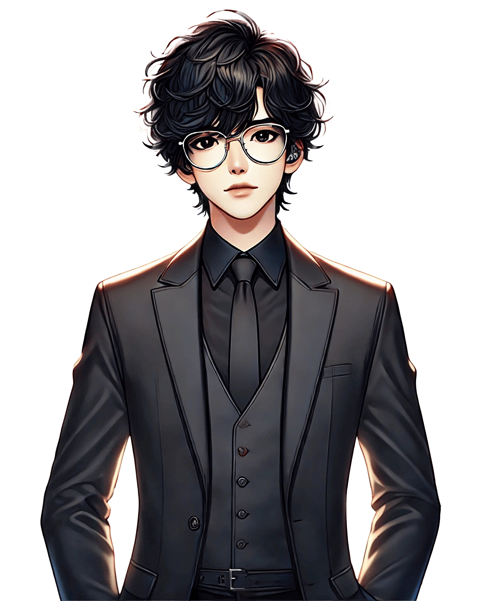

SEUNGHYUK (승혁)
Main Character / Player’s Perspective
- Lead vocalist of the K-pop group LUMEN.
- Quiet, disciplined, and adored for his flawless image.
- Secretly struggles with anxiety and panic attacks hidden beneath perfection.
- Player choices reveal how he balances ambition, authenticity, and emotional survival.